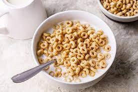

Cereal
Home

The easiest meal one can make and a staple in the breakfast world that is versatile as a lot can be added and can be eaten at any part of the day.
Ingredients
- Milk (dairy or your favourite alternative)
- Your favourite cereal
Steps:
- First, (and this is the most important part) pour your cereal into a bowl (however much your serving size is).
- Then, pour some milk over the cereal until you start seeing the milk about 1cm below the level of cereal (milk can be heated or cold).